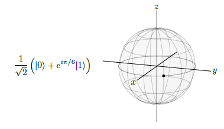
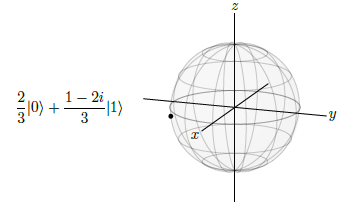
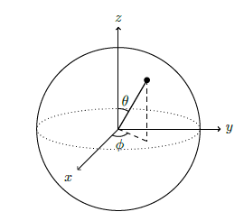

3. Introducción. Las bases cuánticas#
En apartados anteriores hemos hecho una introducción a los diferentes aspectos que rodean al mundo de la programación cuántica. En este apartado seguimos profundizando en este terreno y mostraremos diferentes cuestiones que es imprescindible conocer y dominar para manejarnos de forma fluida en este mundo.
3.1. Medición en la bases Z#
En la sección anterior ya hemos mostrado el siguiente qubit que como allí se ha dicho se encuentra situado en el ecuador de la esfera de Bloch.

Aunque las leyes de la mecánica cuántica permiten esta superposición de estados \(|0\rangle \) y \(|1\rangle\), también exige que si medimos el qubit, como al final de un cálculo para leer el resultado, obtengamos un valor único y definido.Es decir, obtenemos \(|0\rangle\) o \(|1\rangle\), cada uno con cierta probabilidad, no una superposición de los estados \(|0\rangle \) y \(|1\rangle \). Geométricamente, este qubit en particular se encuentra en el ecuador, y por lo tanto a medio camino entre los polos norte y sur, así que si lo medimos, deberíamos de obtener \(|0\rangle\) con probabilidad 1/2 o \(|1\rangle\) con probabilidad 1/2.
Para calcular estas probabilidades, lo que hacemos es tomar la denominada norma-cuadrado de cada de los coeficientes de \(|0\rangle\) o \(|1\rangle\), es decir, la probabilidad de obtnere \(|0\rangle\) es:
Y la probabilidad de obtener \(|1\rangle \) es :
Como se ve la probabilidad es la misma dado que el punto está situado en el ecuador de la esfera Bloch.
Veamos cómo poder obtener estos valores utilizando python
import cmath as cm
import numpy as np
# definimos el primer número complejo
z1 = complex(1/np.sqrt(2),0)
# calculamos su módulo al cuadrado
res1 = abs(z1)**2
print("La probabilidad de colapsar a |0> es: {}".format(res1))
# Definimos el segundo número complejo
z2 = 1/np.sqrt(2)*cm.exp(0+1j*(1/6)*cm.pi)
# Calculamos el módulo de z2
res2 = abs(z2)**2
print("La probabilidad de colapsar a |1> es: {}".format(res2))
La probabilidad de colapsar a |0> es: 0.4999999999999999
La probabilidad de colapsar a |1> es: 0.4999999999999999
Los coeficientes anteriores se denominan amplitudes y en consecuencia se puede decir que
Note
Las probabilidades de colapsar a los elementos de las base están dadas por la norma al cuadrado de las amplitudes
Veamos a continuación otro ejemplo:

(NOTA: Para representar este qubit el lector puede acudir a este apartado de este mismo documentos)
Desde el punto de vista geométrico, puesto que el qubit está más cerca del polo sur, es esperable que la probabilidad de colapsar a \(|1\rangle\) sea mayor que la probabilidad de colapsar a \(|0\rangle\). Veamos esto de forma exacta.
y
Utilizando python se tiene:
# definimos el primer número complejo
z1 = complex(2/3,0)
# calculamos su módulo al cuadrado
res1 = abs(z1)**2
print("La probabilidad de colapsar a |0> es: {}".format(res1))
# Definimos el segundo número complejo
z2 = (1-2j)*(1/3)
# Calculamos el módulo de z2
res2 = abs(z2)**2
print("La probabilidad de colapsar a |1> es: {}".format(res2))
La probabilidad de colapsar a |0> es: 0.4444444444444444
La probabilidad de colapsar a |1> es: 0.5555555555555556
Veamos otro ejemplo. Supongamos el qubit que tiene la siguiente superposición de estados:
Calculemos ahora mediante pytgon las probabilidades de colapsar a cada uno de los dos estados de la base.
# definimos el primer número complejo
z1 = complex(1/3,np.sqrt(3)/3)
# calculamos su módulo al cuadrado
res1 = abs(z1)**2
print("La probabilidad de colapsar a |0> es: {}".format(res1))
# Definimos el segundo número complejo
z2 = (2-1j)*(1/3)
# Calculamos el módulo de z2
res2 = abs(z2)**2
print("La probabilidad de colapsar a |1> es: {}".format(res2))
La probabilidad de colapsar a |0> es: 0.4444444444444444
La probabilidad de colapsar a |1> es: 0.5555555555555556
Podemos decir que un qubit es una superposición de los estados \(|0\rangle\) y \(|1\rangle\). Supongamos entonces que lo medimos, y el resultado es \(|0\rangle\). Ahora algo nuevo: El qubit ya no está en superposición de \(|0\rangle\) y \(|1\rangle\). Ahora es simplemente \(|0\rangle\), y lo sabemos porque lo hemos medido. Medir el qubit lo ha cambiado, esta medición lo obligó a tomar una posición. Decimos que el estado ha colapsado a \(|0\rangle\). Si medimos el qubit de nuevo, obtenemos \(|0\rangle\) con probabilidad 1. Este aspecto de la medición es lo suficientemente importante como para dejarlo enmarcado:
Note
Medir un qubit hace que colapse hacia uno de los dos estados básicos
3.2. Normalización.#
Otro aspecto importante a tener cuenta es que los parámetros de una superposición de estados deben estar normalizados. En este sentido, diremos que un qubit está normalizado si la suma de sus probabilidades es igual a 1. Esta situación se debe requerir siempre, ya que como se ha indicado en repetidas ocasiones, los qubits deben de estar sobre la esfera de BLoch que tiene radio 1. No obstante siempre se podrá normalizar un qubit que no lo esté siguiendo los pasos que se van a mostrar a continuación.
Supongamos que tenemos el siguiente qubit:
Podemos ver que la suma de sus dos probabilidades no vale 1. Efecto:
Por lo tanto deberíamos multiplicar los dos términos del qubit anterior por una constante de normalización que en este caso tomará el valor de \(1/\sqrt{3}\), ya que el valor que hemos obtenido sería la constante de normalización elevada al cuadrado.
A continuación procedemos a crear una función que permite calcular de forma rápida la constante normalización para cualquier qubit. Lo único que habrá que pasar a la función serán los dos parámetros que definen el qubit.
def normalización(z1,z2):
"""
Función que calcula el parámetro de normalización de un qubit.
@return: devuelve el parámetro de normalización elevado al cuadrado
@ parameters
z1,z2 son los dos número complejos que definen el qubit
"""
resul = abs(z1*z1.conjugate())+abs(z2*z2.conjugate())
return 1/resul
# comprobemos
from fractions import Fraction
z1 = complex(np.sqrt(2),0)
z2 = complex(0,1)
print("Resultado en formato decimal:", normalización(z1,z2))
print("Resultado en formato de Fracción: ", Fraction(normalización(z1,z2)).limit_denominator())
Resultado en formato decimal: 0.33333333333333326
Resultado en formato de Fracción: 1/3
El resultado anterior, es la constante de normalización elevada al cuadrado, por lo tanto habrá que tomar la raíz cuadrada de ese valor y obtendremos como resultado \(1/\sqrt{3}\)
3.3. Medidas sobre otras bases.#
Hasta este momento, hemos introducido los qubits \(|0\rangle\) y \(|1\rangle\) como polo norte y polo sur respectivamente, y también podemos decir que forman una base pues mediante combinaciones lineales de estos elementos se pueden generar cualquier qubit que esté en la esfera de Bloch. Ahora bien se puede afirmar que cualesquiera dos puntos que se sitúen en la esfera de Bloch y estén situados de una forma diametralmente opuesta, se puede decir que también forman una base y también se les podría denominar como olo norte o plo sur.
De esta manera, por ejemplo, los qubits \(|+\rangle\) y \(|-\rangle\) podremos decir que también forman una base, igual tratamiento se podría dar a los dos qubits: \(|i\rangle\) y \(|-i\rangle\). Estas tres bases tienen una denominación especial.
En este sentido la base \(\{|0\rangle ; |1\rangle\}\) se le denomina base Z, igualmente a la base \(\{|+\rangle ; |-\rangle\}\) se le denomina base X y a la base \(\{|i\rangle ; |-i\rangle\}\) base Y.
Entonces cualquier punto de la esfera de Bloch se podría poner como combinación lineal de los elementos que forman una base, y además mediante transformaciones matemáticas adecuadas se pueden pasar de expresar los elementos en una base a expresarlos como función de otra base sin ningún problema.
Veamos a continuación un ejemplo de cómo poder pasar de la base \(\{|0\rangle ; |1\rangle\}\) a la base \(\{|+\rangle ; |-\rangle\}\): tomemos por ejemplo el siguiente qubit:
En este caso tenemos una combinación lineal de los dos elementos que forman la base Z. Nuestro objetivo está a psarlos a la base X, es decir expresar ese qubit como una combinación lineal del los dos elementos que forman las base X. Lo primero que demos de hacer es expresar cada uno de los dos elementos de la base Z como una combinación lineal de los elementos de la base X. Esto ya sabemos cómo va pues según se ha dicho anteriormente:
\(|+\rangle={\frac{1}{\sqrt{2}}}\left(|0\rangle+|1\rangle\right)\) y \(|-\rangle={\frac{1}{\sqrt{2}}}{\big(}|0\rangle-|1\rangle{\big)}\,\)
De esas dos ecuaciones se llega a lo siguiente:
Y en consecuencia ya se tienen expresados los elementos de la base Z como combinaciones lineales de la base X. Ahora, haciendo los cambios y operaciones pertinentes, se llega a la siguiente conclusión:
Comprobemos que la suma de las probabilidades de colapsar hacia cada elemento de la base sigue siendo 1:
Y la probabilidad de colapsar a \(|-\rangle\) es:
Y de esta manera hemos podido pasar de expresar un qubit en la base Z a expresarlo como combinación lineal de los elementos de la base X. La forma de hacerlo de forma general sería la siguiente.
Creamos la matriz de cambio de base de la siguiente manera: En la primera columna ponemos los coeficientes obtenido de expresar \(|0\rangle\) en la base X y en la segunda columna los coeficientes de expresar \(|1\rangle\) en la base X. De esta manera tenemos la siguiente matriz de cambio de base:
Ahora multiplicamos la matriz M por las coordenadas que tenemos en la base Z y el resultado sería las coordenadas que se obtienen en la base X. La expresión matemática sería la siguiente:
Hagamos ahora este cambio de base, pero pasando las coordenadas a la base Y. Como se tiene que :
La matriz de cambio de base será:
Y por lo tanto, las nuevas coordenadas serían:
En esta caso la probabilidad de colapsar a \(|i\rangle \) es : \(\left\lfloor{\frac{\sqrt{3}-i}{2{\sqrt{2}}}}\right\rfloor^{2}={\frac{3+1}{8}}={\frac{1}{2}}\).
Y la de colapsar a \(|-i\rangle \) es : \(\left\lfloor{\frac{\sqrt{3}+i}{2{\sqrt{2}}}}\right\rfloor^{2}={\frac{3+1}{8}}={\frac{1}{2}}\)
3.4. Mapeo sobre la esfera de Bloch#
En lo visto hasta, ya sabemos que los qubits deben de estar sobre la esfera de Bloch, y ahora en esta sección vamos a ver diferentes sistemas de coordenadas que nso facilitan la localización de esos puntos o qubits sobre la esfera.
3.4.1. Fases global y relativa.#
Ya sabemos que un qubit se puede ver como una combinación lineal de elementos de una base. Entonces supongamos que lo podemos representar de la siguiente manera (aquí el qubit está multiplicado por \(e^{i\theta}\) que sería la fase global):
para un determinado ángulo \(\theta\). Si procedemos a medir este qubit en la base Z, la probabilidad de colapsar al \(|o\rangle\) será:
y la de colapsar a \(|1\rangle\) :
Como podemos ver esta fase global no tiene en absoluto ninguna influencia en la localización del punto sobre la esfera de Bloch. Si hiciéramos la mediación sobre la base X, entonces el qubit estaría representado por:
Y las probabilidades de colapsar hacia cada elemento de la base serían:
y
Es decir tenemos el mismo resultado que si no consideramos la fase global. Este es un comportamiento general, por lo que podemos recuadrar lo siguiente:
Note
Las fase globales son irrelevantes desde un punto de vista de situación de los qubits sobre la esfera de Bloch
Podemos entonces decir que estas fases globales pueden ser borradas/ignoradas. Estados que difieren en una fase global se puede considerar que son el mismo estado, y que corresponde al mismo punto sobre la esfera de Bloch.
Sin embargo las fases relativas, sí son físicamente significativas como podemos ver en el siguiente ejemplo:
comparado con
En este caso son dos puntos diferentes sobre la esfera de Bloch
3.4.2. Esfera de Bloch#
Un genérico estado cuántico se suele denominar por \(\Psi\), y como es un estado cuántico es escrito como un ket, es decir en la forma \(|\Psi\rangle\) y tendrá unas amplitudes \(\alpha\) y \(\beta\). Por lo tanto se podrá escribir de las siguiente manera:
De manera que se cumple la normalización
Como la fase global no aparece, por convención se suele asumir que \(\alpha\) es un número real y positivo y \(\beta\) debe ser un número complejo. Para determinar que este punto se encuentra en la esfera de Bloch lo debemos parametrizar o escribir en términos de otros parámetros. Así pues vamos a escribir \(\alpha\) y \(\beta\) en términos de dos ángulos que vamos a denominar \(\theta\) y \(\phi\):
Con \(0\leq\theta\leq\pi{\mathrm{~y~}}0\leq\phi<2\pi\), de esta manera se captura todas las propiedades que necesitamos: \(\alpha\) es un número real y positivo y \(\beta\) es un número complejo. Asi pues el qubit anterior \(\Psi\), se puede escribir como:
Veamos esto con un ejemplo. Supongamos que tenemos el qubit siguiente:
Podemos observar que la amplitud de \(|0\rangle\) es un número complejo, pero como ya se ha dicho antes se suele asumir que debe ser un real positivo. Entonces para hacer esto, convertimos este complejo a formato polar, y entonces se tiene lo siguiente:
el estado
se puede factorizar y obtener:
Donde el símbolo \(\equiv\) significa que es equivalente, ya que no se tiene en cuenta la fase global. Para poner en el formato que se ha visto anteriormente, necesitamos cambiar el signo menos de la segunda amplitud por un signo más, pero esto es fácil, ya que \(e^{i\pi}=-1\). Entonces tendríamos el siguiente estado cuántico:
Ahora ya sí lo tenemos en el formato que deseamos y en consecuencia se tendría:
En consecuencia los ángulos buscados serían los siguientes:
Por lo tanto nuestro qubit, una vez normalizado sería el siguiente:
Una vez puesto en qubit en este formato, podremos localizar el qubit en la esfera de Bloch mediante estos dos ángulos ( esto es lo que se denomina coordenadas esféricas), como se muestra en la siguiente figura.

Por lo tanto, y tal como se aprecia en la figura, el valor del ángulo \(\theta\) mide el ángulo con las zona del polo norte y se llama ángulo polar, y \(\phi\) mide el ángulo sobre el eje X en el plano xy y se denomina ángulo azimuthal. Por lo tanto, en el caso del ejemplo anterior, nuestro qubit se encontraría situado en un ángulo de \(\theta = \pi/3 = 60º\) sobre el olo norte y en un ángulo de \(\phi=5\pi/6=150º\) en el plano xy y sobre el eje x.
También se puede demostrar que el paso de estas coordenadas esféricas a cartesianas, se realiza en base a las siguientes ecuaciones:
Continuando con nuestro ejemplo, ahora tenemos que \(\theta=\pi/3\) y \(\phi=5\pi/6\), por lo tanto las coordenadas en el espacio tridimensional serían las siguientes:
Y en consecuencia el qubit anterior dado en coordenadas cartesianas sería: \((-3/4,\sqrt{3}/4,1/2)\)
Ya vimos en un apartado anterior cómo poder obtener una función para pasar de las coordenadas dadas en formato de amplitudes a coordenadas polares. La función que en ese momento se presentó, recordemos, era la siguiente:
import cmath,math
def super2polares(z1,z2,):
"""
Función que nos sirve para pasar de unas coordenadas del tercer tipo a coordenadas polares
@parámetros:
z1: Valores del primero número complejo
z2: valores del segundo número complejo
@return:
Los valores del theta y phi de las coordenadas esféricas
"""
r1, phi1 = cmath.polar(z1)
r2, phi2 = cmath.polar(z2)
theta = 2 * math.acos(r1)
phi = phi2 - phi1
return theta,phi
Vamos a utilizar esta función para comprobar si obtenemos con ella los mismos resultados que los obtenidos de forma manual.
import numpy as np
z1 = complex(3/4,np.sqrt(3)/4)
z2 = complex(-1/2,0)
super2polares(z1,z2)
(1.0471975511965979, 2.6179938779914944)
# comparamos con el resultado anterior
print("valor de theta manualmente: ", np.pi/3)
print("valor de phi manualmente: ", 5*np.pi/6)
valor de theta manualmente: 1.0471975511965976
valor de phi manualmente: 2.6179938779914944
Ahora podemos definir en Python otra función de manera que se le pase como parámetros a la función los valores de theta y phi y devuelva las coordenadas cartesianas (x,y,z). Construimos a continuación esa función:
def polar2cartesian(theta,phi):
"""
Esta función va a transformar las coordenadas esféricas de un qubit en coordenadas
cartesianas
@param:
Theta, valor del ángulo theta
phi, valor del ángulo phi
"""
x = math.sin(theta)*math.cos(phi)
y = math.sin(theta)*math.sin(phi)
z = math.cos(theta)
return (x,y,z)
A esta última función le pasamos las coordenadas esféricas obtenidas anteriormente, y después comparamos resultado:
polar2cartesian(super2polares(z1,z2)[0],super2polares(z1,z2)[1])
(-0.7500000000000001, 0.4330127018922193, 0.4999999999999999)
# Comparamos resultado con el obtenido manualmente
(-3/4, np.sqrt(3)/4, 1/2)
(-0.75, 0.4330127018922193, 0.5)
3.5. Comprobación si dos qubit forman una base.#
Ya hemos visto en apartados anteriores que la condición pata que dos qubits formaran uan base, era que estuvieran en la esfera de bloch y que además estuvieran en puntos diametralmente opuestos.
En este apartado vamos a utilizar las funciones definidas anteriormente para comprobar esto, bien entendido que para que dos qubits sean diametralmente opuestos, equivale a decir que la distancia entre ellos sea 2 (porque el diámetro de la esfera de Bloch es 1).
Vamos a probar ahora esto para los los qubits:
Veamos que el primer qubit está sobre la esfera de Bloch
z1= complex(np.sqrt(3)/2,0)
z2 = complex(0,1/2)
abs(z1)**2+abs(z2)**2
0.9999999999999999
Su paso a polares se harías de la siguiente manera
super2polares(z1,z2)
(1.0471975511965979, 1.5707963267948966)
Comprobemos que el segundo qubit también está sobre la esfera de Bloch
z11= complex(0,1/2)
z22 = complex(np.sqrt(3)/2,0)
abs(z11)**2+abs(z22)**2
0.9999999999999999
Su paso a polares se haría de la siguiente manera:
super2polares(z11,z22)
(2.0943951023931957, -1.5707963267948966)
Definimos la siguiente función que nos permite calcular la distancia cartesiana entre dos puntos en el espacio.
def distancia(a,b):
"""
Función que sirve para calcular la distancia entre dos puntos, dadas sus coordenadas cartesianas
@param
a,b son las coordenadas cartesianas en el espacio de los dos puntos
"""
a1 =(a[0]-b[0])**2
a2 = (a[1]-b[1])**2
a3 = (a[2]-b[2])**2
dis = np.sqrt(a1+a2+a3)
return dis
Con todos los datos anteriores comprobemos que la distancia entre los dos puntos es 2
# pasamos a coordenadas cartesianas el primer qubit
a = polar2cartesian(super2polares(z1,z2)[0],super2polares(z1,z2)[1])
# pasamos a coordenadas cartesianas el segundo qubit
b= polar2cartesian(super2polares(z11,z22)[0],super2polares(z11,z22)[1])
# calculamos la distancia
distancia(a,b)
1.9999999999999998
Efectivamente como hemos podido comprobar se puede confirmar que los dos qubits anteriores forman una base. En la sección álgebra lineal, se describirá otro procedimiento más científico para detectar si dos qubits forman o no una base.